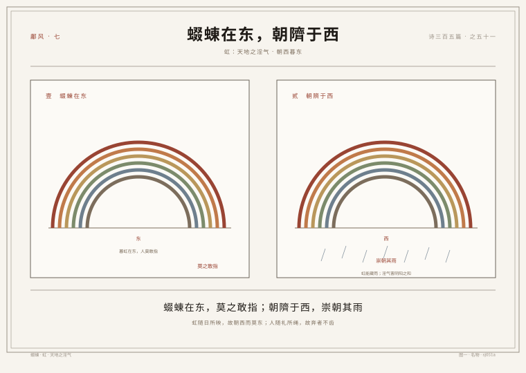
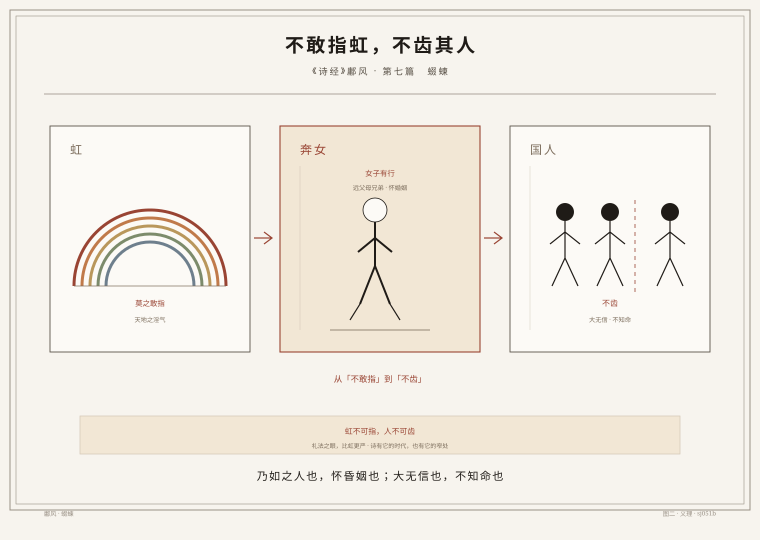

第五十一篇 蝃蝀
鄘风 · 之七 SJ051
朗读 · 普通话
依经文正文朗读，句读从文；不配乐、不改速、不加拖腔。全库同一音色（豆包 TTS），非播音员录制。
一 解题
诗三判：
- 谁在说：卫人、国人；一个站在礼法、舆论立场说话的旁观者。不是奔女自道，也不是文公自夸。
- 说什么事：一个女子私奔、不待父母之命而嫁；诗以虹为比，以「女子有行」反复，最后责其「大无信、不知命」。
- 为何编在此：鄘风第七篇。前六篇由守、讳、刺、桑间、名分、复国；此篇回到婚姻之正。复国之后，礼法重建；此篇是「复国之后的正婚姻」。
《毛序》：「《蝃蝀》，止奔也。卫文公能以道化其民，淫奔之耻，国人不齿也。」
朱子《诗集传》：「蝃蝀，虹也。日与雨交，倏然成质。似有血气之类。乃阴阳之气、不当交而交者。盖天地之淫气也。……此刺淫奔之诗。言蝃蝀在东，而人不敢指，以比淫奔之恶，人不可道。」
本库的看法：这首诗的狠处，不在骂奔女，在「莫之敢指」四字。
连虹都没人敢指，何况人？诗把舆论的分量写足了。但「不知命」三字又把它推到礼法：不是不知命运，是不知婚姻当待父母之命。
二 经文
第一章
蝃蝀在东，莫之敢指。女子有行，远父母兄弟。
第二章
朝隮于西，崇朝其雨。女子有行，远兄弟父母。
第三章
乃如之人也，怀昏姻也。大无信也，不知命也。
分章：三章，章四句。
章末韵：
- 一章：指、弟（脂部）；东、西、行不入。
- 二章：雨、母（鱼部）；朝、西、行不入。
- 三章：人、姻、信、命（真部，平去通押）。
三 韵读
| 一 |
指、弟 |
脂部 |
| 二 |
雨、母 |
鱼部 |
| 三 |
人、姻、信、命 |
真部（平去通押） |
三章三换韵：脂—鱼—真。由虹到人，由人到礼；韵愈转愈近人事，愈收愈严。一章「指、弟」一开一合；二章「雨、母」一降一收；三章「人、姻、信、命」四字连押，像四记追问。
四 字义与名物
字义
- 蝃蝀（dì dōng）——虹；《尔雅》作「螮蝀」。
- 莫之敢指——没有人敢指它；古人以虹为淫戒，指之不祥。
- 有行——有适人之道、出嫁；此诗兼指私奔。
- 远——远离。
- 朝隮（zhāo jī）——早晨升起的虹气；隮，升。
- 崇朝（zhōng
zhāo）——终朝，从旦至食时，整个早晨。
- 乃如之人——像这样的人；指淫奔者。
- 怀——思念、想着。
- 昏姻——婚姻、男女之欲。
- 大无信——极无贞信；大，太、极。
- 不知命——不知婚姻当待父母之命；一说不知天理之正。
名物
- 蝃蝀 /
虹——日与雨交而生，古人视为「天地之淫气」；虹随日映，朝西暮东。
- 朝隮——早晨升起的虹气；虹能藏雨，故「崇朝其雨」。
- 昏姻——婚姻之礼；此诗以「父母之命」为婚姻之正。
五 今译
第一章
彩虹出现在东方，没有人敢指。女子有出嫁之道，却远离父母兄弟。
第二章
早晨虹气升在西方，整个早晨下着雨。女子有出嫁之道，却远离兄弟父母。
第三章
竟像这样一个人，一心想着婚姻。太没有贞信了，也不知婚姻当待父母之命。
六 章旨
一章：虹在东，莫敢指；女子有行，远父母兄弟。
以虹之淫气起兴；「远」字先把婚姻之正摆出来。
二章：虹在西，崇朝雨；女子有行，远兄弟父母。
虹能藏雨，喻淫慝之气害阴阳之和；「有行」复唱，顺序换。
三章：乃如之人，怀婚姻；大无信，不知命。
由物象转到人，由人转到礼：思欲而不守贞信，不知婚姻当待父母之命。
三章合看：虹不可指，人不可齿；礼法之眼，比虹更严。
七 诗教
- 兴：蝃蝀（虹）起兴，以天地淫气比淫奔；兴而兼比。
- 观：观国人对淫奔的态度：不敢指、不齿；也观「有行」的二重性：出嫁是正，私奔是邪；同一「行」字，正邪之间。
- 群：此诗可与「礼法共同体」同群——国人以「不齿」相绝；也可与「被不齿者」同群——读诗时别忘了那个被指的女人。
- 怨：怨在「乃如之人」一句：从虹到人，从人到「无信」；诗没有给奔女辩解的机会，这是它的狠，也是它的窄。
八 分寸与边界
- 不可把「蝃蝀」只当自然虹。它是「天地之淫气」的比；古人的虹是戒，不是气象学。
- 不可把「女子有行」只当「出嫁」。它有「适人之道」的正解，也有「私奔」的邪行；同一「行」字，正反两用。
- 不可把「不知命」只当「不知命运」。毛、郑训「不知婚姻当待父母之命」，朱子训「不知天理之正」；两说并存，不能混。
- 不可把「国人不齿」读成全民共识。它是礼法舆论的立场；诗有它的时代，也有它的窄处。
- 不可把「刺淫奔」变成对女性的单方面羞辱。诗中的「无信」是礼法语言；今天读，要看见「舆论杀人」的另一面。
九 存疑
- 诗旨与旧说：毛序「止奔」；朱子「刺淫奔」；韩诗「刺奔女」；或说「刺卫宣公夺太子伋妇」（《诗经世本古义》）。本库从毛、朱，旧说两存。
- 文字异文：「蝃蝀」《尔雅》作「螮蝀」；「怀昏姻」或作「怀婚姻」；「大无信」之「大」读「太」；「不知命」的「命」或「父母之命」、或「天命／正理」。
- 名物歧解：蝃蝀＝虹；朱子「天地淫气」；毛传「夫妇过礼则虹气盛」；「朝隮」＝升气／虹；「崇朝」＝终朝；「隮」或云「虹」。
- 年代与作者：诗无作者。毛序系卫文公；事或当文公时；但「止奔」未必实指某人，诗可以是通用戒辞。
- 编次之疑：为何在《定之方中》后？复国之后正婚姻；由宫室到婚姻，由「建」到「礼」；也可能是卫俗组诗，《鄘风》篇次未必有严密义例。
十 跨典
- 《鄘风·定之方中》：前篇复国建宫室，此篇复国之后正婚姻；一建一礼。宫室定其居，婚姻定其匹。
- 《鄘风·桑中》：前篇写桑间私约，此篇止奔；一写风俗，一正风俗。桑中之约，是此篇要止的「奔」。
- 《鄘风·墙有茨》：前篇讳「中冓之言」，此篇指虹；一讳一刺。讳是守住口，刺是把虹指出来。
- 《礼记·昏义》：「昏礼者，将合二姓之好，上以事宗庙，而下以继后世也。」婚姻之正，此篇「不知命」反照。
- 《孟子·滕文公下》：「不待父母之命、媒妁之言，钻穴隙相窥，逾墙相从，则父母国人皆贱之。」与此篇「不知命」「国人不齿」同调。
- 《齐风·南山》：「娶妻如之何？必告父母。」婚姻待父母之命，此篇所责，正是「不告」。
十一 双卡与图
双卡五对：
| 蝃蝀（虹，天地淫气之喻） |
普通彩虹（自然现象） |
| 女子有行（适人之道／出嫁） |
女子走路（误） |
| 崇朝（终朝，整个早晨） |
崇拜王朝（误） |
| 大无信（极无贞信） |
大不信任（误） |
| 不知命（不知婚姻待父母之命／正理） |
不知命运（偏） |

图一 · 东西两虹 名物图

图二 · 不敢指虹，不齿其人 义理图
读图三处：
- 东西两虹：图一左东右西；虹随日映，朝西暮东；一幅「莫敢指」，一幅「崇朝雨」。
- 一指一雨：左图不画指而标「莫之敢指」，右图雨线终朝；虹能藏雨，喻淫气害阴阳之和。
- 三栏：图二虹、奔女、国人；由「不敢指」到「不齿」，礼法之眼比虹更严。